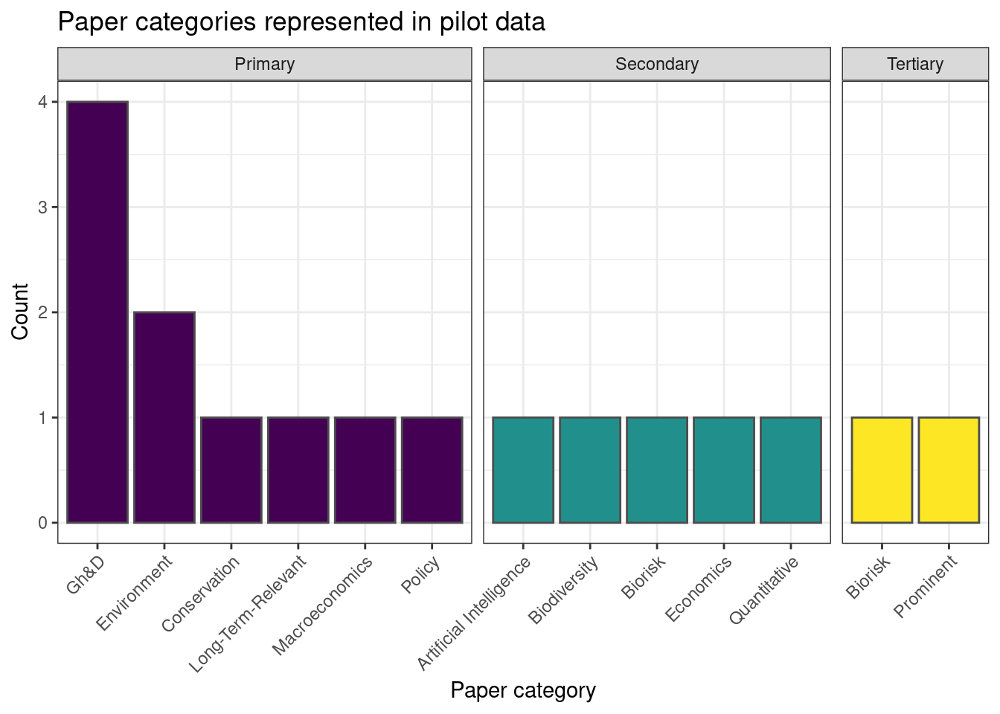
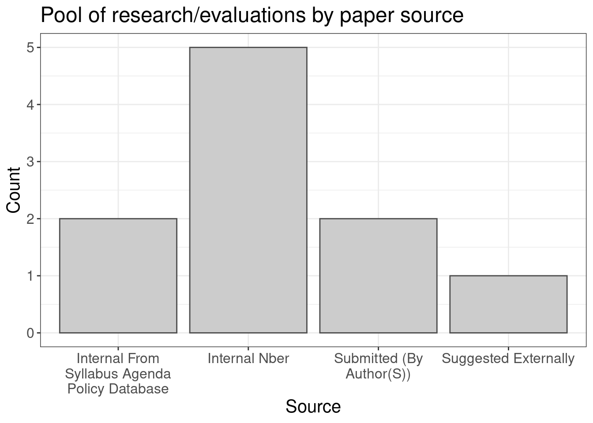

2 Evaluation data: description, exploration, checks
2.1 Data input, cleaning, feature construction and imputation
Note on data input (10-Aug-23)
Below, the evaluation data is input from an Airtable, which itself was largely hand-input from evaluators’ reports. As PubPub builds (target: end of Sept. 2023), this will allow us to include the ratings and predictions as structured data objects. We then plan to access and input this data directly from the PubPub (API?) into the present analysis. This will improve automation and limit the potential for data entry errors.
2.2 Basic presentation
What sorts of papers/projects are we considering and evaluating?
In this section, we give some simple data summaries and visualizations, for a broad description of The Unjournal’s coverage.
In the interactive table below we give some key attributes of the papers and the evaluators.
Evaluation metrics (ratings)
Next, a preview of the evaluations, focusing on the ‘middle ratings and predictions’:
Initial pool of papers: categories
Next, we present a plot of categories for all papers in the Unjournal’s initial pool. One paper can belong to more than one category.
Error in `vec_assign()` at tidyr/R/replace_na.R:74:7:
! Can't convert `replace$category` <character> to match type of `data$category` <logical>.
Next consider…
- Composition of research evaluated
- By field (economics, psychology, etc.)
- By subfield of economics
- By topic/cause area (Global health, economic development, impact of technology, global catastrophic risks, etc. )
- By source (submitted, identified with author permission, direct evaluation)
- Timing of intake and evaluation1
Paper selection
The Sankey diagram below starts with the papers we prioritized for likely Unjournal evaluation:2.
Error in `tibble()`:
! Tibble columns must have compatible sizes.
• Size 25: Existing data.
• Size 18: Column `color`.
ℹ Only values of size one are recycled.Error in `left_join()` at dplyr/R/rename.R:64:3:
! Join columns in `y` must be present in the data.
✖ Problem with `label`.Todo: 3
Paper categories

Paper source


The distribution of ratings and predictions
Next, we present the ratings and predictions along with ‘uncertainty measures’.4 Where evaluators gave only a 1-5 confidence level5, we use the imputations discussed and coded above.
Below we present these, for each category and prediction (overall and by paper). Papers are arranged in descending order of average overall score. Note that evaluations made by anonymous reviewers are marked with a black border around the rating.
Error: object 'overall_lb_imp' not foundBelow, we are building an interactive dashboard.6
Shiny dashboard
Notes, clarifications, and caveats on the above dashboard
The aggregated ratings and ranges seem to not yet be computed properly
In the ‘journal ratings’ view, the stars/asterisks are used when the ‘predicted’ and ‘merited’ ratings are the same
You can see this dashboard on it’s own hosted here.
Future vis
Each rating is a dimension or attribute (potentially normalized) potentially superimpose a ‘circle’ for the suggested weighting or overall.
Each paper gets its own spider, with all others (or the average) in faded color behind it as a comparator.
Ideally user can switch on/off
Beware – people may infer things from the shape’s size
Sources of variation
Next, look for systematic variation in the ratings
By field and topic area of paper
By submission/selection route
By evaluation manager (or their seniority, or whether they are US/Commonwealth/Other)7
… perhaps building a model of this. We are looking for systematic ‘biases and trends’, loosely speaking, to help us better understand how our evaluation system is working.
Relationship among the ratings (and predictions)
Next steps (suggested analyses)
Correlation matrix
ANOVA
PCA (Principle components)
With other ‘control’ factors?
How do the specific measures predict the aggregate ones (overall rating, merited publication)
- CF ‘our suggested weighting’
Next chapter (analysis): aggregation of evaluator judgment
Scoping our future coverage
We have funding to evaluate roughly 50-70 papers/projects per year, given our proposed incentives.
Consider:
How many relevant NBER papers come out per year?
How much relevant work in other prestige archives?
What quotas do we want (by cause, etc.) and how feasible are these?
Consider: timing might be its own section or chapter; this is a major thing journals track, and we want to keep track of ourselves↩︎
Those marked as ‘considering’ in the Airtable↩︎
Make interactive/dashboards of the elements below↩︎
We use “ub imp” (and “lb imp”) to denote the upper and lower bounds given by evaluators.↩︎
More or less, the ones who report a level for ‘conf overall’, although some people did this for some but not others↩︎
We are working to enable a range of presentations, aggregations, and analyses (your suggestions are welcome), including reasonable approaches to incorporating evaluator uncertainty↩︎
DR: My theory is that people in commonwealth countries target a 70+ as ‘strong’ (because of their marking system) and that may drive a bias.↩︎